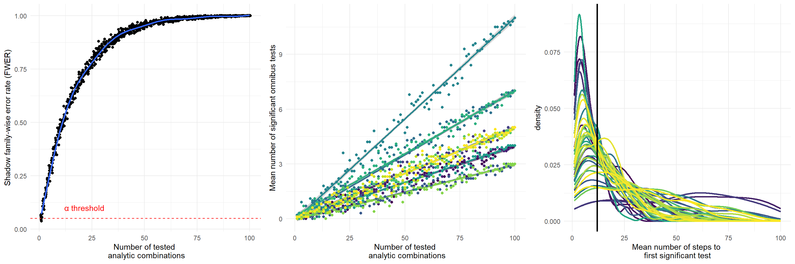
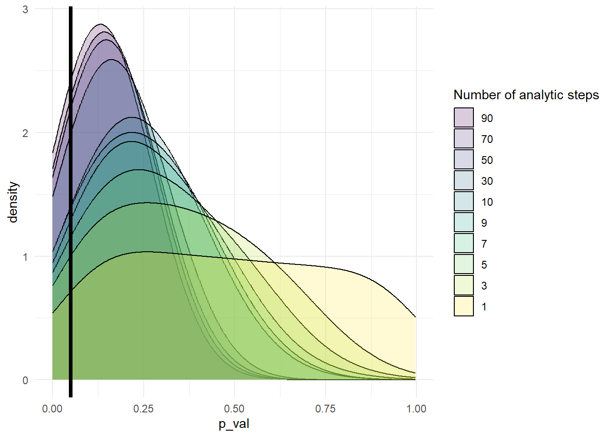

iqr_fence <- function(data, variable, value) {
data |>
group_by({{variable}}) |>
mutate(across({{value}}, function(x) {
q1 <- quantile(x, 0.25, na.rm = TRUE)
q3 <- quantile(x, 0.75, na.rm = TRUE)
iqr <- q3 - q1
lower <- q1 - 1.5 * iqr
upper <- q3 + 1.5 * iqr
ifelse(x < lower | x > upper, NA, x)
})) |> na.omit() |>
ungroup()
}Bioscientist’s Guide to P-hacking (and to never p-hacking again)
Throughout the training, we have exhaustively discussed computing different null distributions, p-values and the limitations of only looking at p-values. Instead, we have emphasized different effect size measures (i.e. correlation coefficient, Cohen’s d, \(\eta^2\), Cramer’s V and \(R^2\)). We have also examined the corollaries of statistically honest but underpowered designs, including of course a higher chance of simply missing a ‘true’ effect or reporting inflated effect sizes (a.k.a. Winner’s curse).
But what if we married statistical analysis with ambition? What are the consequences of survival in a publish or perish ecosystem that selects for ready-fire impactful findings - a career measured by one’s weight in triple-star p-values? After all, acquiring scientific knowledge is by definition unpredictable. Were only there some mechanism to secure a significant outcome, regardless of that uncertainty. In this session, we explore one such mechanism - p-hacking - and why it undermines genuine empirical knowledge, especially when it becomes common in the field at large.
- This week’s session will be a blend of coding and a journal club. Let’s start by reading Big little lies: a compendium and simulation of p-hacking strategies.
- How would you describe p-hacking? What does p-hacking fundamentally involve?
- At what point do flexible analytic choices cross the line into questionable research practices?
- Why might setting some threshold, say \(\alpha=0.05\) contribute to the problem of significance fishing?
- What is HARKing? Illustrate it with an example.
- Explain the concept of researcher degrees of freedom.
In the following section, we leave the manipulation of data open-ended to highlight this idea of researcher degrees of freedom. Along the way, we introduce common questionable practices for modifying data. While these approaches may have good justification in some scenarios, to the p-hacker, they are simply options on a menu to try, individually or in tandem until the desired outcome is achieved.
- Let’s begin by focusing on common data manipulations: outlier removal and variable discretization.
What constitutes an outlier? When might outlier removal be justified and how might it be exploited?
Let’s take a look at two common outlier removal approaches: interquartile range (IQR) fencing and thresholding based on the z-score.
In IQR fencing, data are removed if they are are less than Q1 - 1.5 * IQR or greater than Q3 + 1.5 * IQR. Complete the function below to perform IQR fencing across a set of groups
- We can also perform z-score thresholding, where outliers are removed above some number of standard deviations from the mean. The general guidelines often suggest 2*sd or 3*sd thresholds but the ambiguity it offers provides an opportunity to test different alternatives.
z_thresh <- function(data, variable, value, thresh=2) {
data |> group_by({{variable}}) |>
filter(abs({{value}} - mean({{value}})) < sd({{value}})*thresh) |> ungroup()
}- Download the following dataset containing eight groups with some continuous outcome of interest:
Visualize the data per group. Consider two alternative approaches to this visualization. In the first, try to emphasize the between-group differences in means to persuade your reader. You could, for example, take your pick of a simple bar chart or line graph. In the second, we’d like you to visualize as much of the underlying data as possible (e.g. violin and dot plot).
Let’s now search for significance! Start by running an ANOVA using any approach we’ve discussed in previous sessions.
Try going ahead anyway with multiple comparisons, using the
rstatix::pairwise_t_testto test all pairwise differences using Bonferroni. Change the correction method from Bonferroni to FDR just to make sure we’re not being too conservative (might as well check right?).What if outliers are obscuring any true differences? Try a few different cutoffs and perform ANOVAs for each cutoff. Record your F-statistics and p-values for each test.
Once you found a cutoff yielding a significant result, try running a post hoc test and prepare a table showing the Cohen’s d/t-statistic for each pairwise difference of means and its p-value
Let’s turn to the IQR fence. Try the same analyses, beginning with an omnibus test and then multiple comparisons.
Compare the outcome when you use Bonferroni vs. FDR correction. When might choosing among different multiple testing approaches constitute a form of p-hacking?
Once you have your candidate method, report your findings as if you were writing a results section or abstract, providing a brief explanation of the methods you used. There’s no need to list all the combinations you tried, of course, they were just the groundwork before landing on the correct method.
- Let’s take a look at discretization. We touched on the issues of discretization during the previous project work session. Using simulation, we found that binning the predictor variable from a continuous one to 6 and then 3 bins before binning both outcome and predictor successively reduced our power of finding a true effect. But for the p-hacker, discretization provides yet another lever to test multiple different analytic combinations and exploit sampling error to try extracting something purportedly significant. The number of bins, placement of intervals and equality of bin sizes are all features that can be manipulated and the winning combination justified post hoc in the results. We provide you with the next function in the p-hacker’s toolbox:
discretize <- function(data, x, n, binned = "binned_x") {
suffix <- str_sub(binned,-1)
if (length(n) == 1) {
data |> mutate(!!sym(binned) := cut({{x}},
breaks = n,
labels = str_c(suffix, 1:n)))
} else {
data |> mutate(!!sym(binned) := cut({{x}},
breaks = n,
labels = str_c(suffix, 1:(length(n) - 1))))
}
}Don’t worry too much about the !!sym := notation. This will just allow us to call our new discretized variable whatever we specify in the binned argument, something that will come in handy when we explore binning both predictor and outcome variables. By default, it will create a new column called binned_x, assigning each datapoint to a group, x1...xn, depending on how many bins you specify in n. Alternatively, you could pass in a vector of irregular interval breaks to n, such as c(0,15,45,90,100), creating n=4 bins.
- Download the following dataset, containing predictor (
x) and outcome (y) variables:
- Since both are continuous, why don’t we start by fitting a simple linear regression using techniques we’ve already covered in session 20. Plot the data and overlay the line and its standard error using
geom_ribbon. What values did you see for the intercept and gradient? What is the \(R^2\) and its p-value?- Remove datapoints you think are applying too much leverage to the linear model and refit the model
- Let’s now try testing out a few different discretizations coupled with an ANOVA. Some things to try are the following:
- Bin the predictor variable, anywhere between 2 up to 10 bins
- Combine binning with different within-bin outlier detection + removal approaches
- Choose interval widths you can find ad hoc justifications for by looking at the ggplot
- Binning both x and y variables (run
discretize()twice, passingy, binned = "binned_y"on the second pass) and run a \(\chi^2\) test
- Any luck? Let’s run some post hocs then and see if anything survived correction. Remember that we can always fall back on FDR if we’re being too conservative with Bonferroni.
- Excellent! Now write a summary paragraph of your findings and prepare a plot to illustrate the significant differences you found
We hope by now that, alongside the paper, we’ve belabored the point that the more combinations you try, the greater the likelihood of identifying a spurious significant result. Consider it a ‘shadow’ family-wise error rate, since these prior exploratory analyses are rarely published in the final paper/abstract. When you report post hoc tests and the correction method used, you have essentially only accounted for the batch of pairwise tests performed - something required in any reputable journal - and not the multiple analytic combinations (i.e. outlier cutoffs, alternative discretizations and transformations) you tried before landing on the winning combination.
- We will belabor it just a bit more through simulation. Below we show three visualizations of how testing alternative analytic combinations inflates the ‘shadow’ FWER. We simulated n=500 datasets comprising
xandyvariables similar to the one you loaded in for exercise 3. We then tested different 1D or 2D binning strategies and extracted the p-value for each ANOVA or \(\chi^2\) test. We either performed no outlier removal, outlier removal using IQR fencing, or \(2\sigma\) or \(3\sigma\) thresholds. Note that we are not looking at any post hoc tests here. In total, that gave us 100 different analytical combinations. You can take a look at them here:
combs <- expand.grid(
outlier_thresh = seq(0,3),
# 0 = no outlier removal, 1 = IQR, 2 = z_thresh at 2sd, 3 = z_thresh at 3sd
bins_x = seq(4,8),
bins_y = c(0,2:5)
)We can then take a look at the effect of trying out different numbers of combinations. In the first panel on the left, we randomly subsampled n analytic combinations from each of 500 simulations 10 times and reported whether at least 1 significant result occurred in each of the 500 simulations within the n batches of combinations attempted. We then calculated the proportion out of the 500 datasets that showed at least 1 significant result for each number of attempted steps.
- Interpret the first plot. Why does the shadow FWER appear to increase with more analytic combinations?
- The second plot shows the mean number of significant results as more combinations are attempted for 10 randomly subsampled simulated datasets. Why do different datasets appear to have different gradients? Why might the number of false positives appear to increase linearly with the number of steps attempted?
- Inspect the third plot. Here, we have visualized the distribution of the minimum number of steps taken before finding a significant result for 50 randomly chosen datasets. We shuffled the order of the analytic choices to simulate how a p-hacker might try different analytic paths before converging on the chosen path. Note how it doesn’t typically take many tests before finding a spuriously significant result.

- Let’s now explore the impact of changing the number of analytic choices on the distribution of observed p-values, reminiscent of Figure 14 in the paper. Explain what the figure shows.

Now it’s your opportunity to indulge in either some significantly reputable or refutably significant data analysis. Below we have provided two datasets, where you will analyze them as either a p-hacker, a data analyst with more statistical integrity, or one of each. 5. Download the first dataset below:
- This dummy dataset records the outcome of five different treatments:
- C2: cardioselective \(\beta\)-blockers,
- C3: non-selective \(\beta\)-blockers,
- C4: targeted monoclonal antibody treatment,
- C5: non-invasive Vagus nerve stimulation,
- C6: anti-inflammatory (cox-2 inhibitor)) compared to a control condition (C1) in n=100 participants.
Participants’ age (age) and sex (sex) were recorded during enrollment across three sites (site): “A”, “B” and “C”. Prior to the trial, participants’ concentration levels of blood catecholamines (biomarker) were measured. Each participant’s average heart-rate was recorded prior to receiving a double-blinded treatment in the baseline condition and then following the treatment (treatment). Cytokine reactivity (immune_level) and the participant’s perceived stress (stress_level) were recorded.
- Click the button below to determine your role for the first dataset:
If you are a p-hacker, consider doing the following:
- Transform and/or discretize your variables until the desired result is achieved
- Eliminate outliers using different techniques or thresholds
- Test any and all combination of variables: include or withhold different dependent variables, test multiple outcome variables and add/remove covariates
- Try subsetting your data for separate subgroup analyses (e.g., analyzing only one Site or one Sex), as well as testing models with and without explicit interaction terms.
- If running an ANOVA, debate different post hoc correction methods and rationalize which one to use based on your findings
- Decide on what your initial hypotheses are after knowing the data. Consider selectively reporting the variables that support your narrative rather than the trivia of reporting everything you tried
- Prepare persuasive figures to illustrate your results, with a focus on showcasing your significant findings rather than any effect sizes
If you are an honest data analyst, consider doing the following:
- Prestate your hypothesis/es based on any a priori knowledge
- Preregister your analysis plan(s): which variables will you require to test your hypotheses? Which statistical analyses will you perform?
- Do not perform any unnecessary data transformations/discretizations without good reason
- Report all analyses you performed, irrespective of whether the results are significant or not
- Report effect sizes where possible that reflect uncertainty in the estimate (i.e. using bootstrapped confidence intervals)
- Provide informative visualizations that highlight your findings
For either role, prepare a short Quarto report to showcase your findings.
Presenting your findings
When you present your findings to the rest of the group, it shouldn’t be obvious which role you played. Explicitly questionable data analysis does not publish and could even result in retraction. You should treat others in the session as potential reviewers and should be prepared to review your peers’ findings too.
- In this neuroimaging study, a preliminary 60 participants were collected. Here are their data:
- Since then, you collected 30 more:
The study was motivated by identifying candidate white matter tracts and resting state network activity that may predict executive functioning scores (exec_score), working memory (working_memory) and sustained attention (attention_score) across neurotypical and autistic chidren, though you may explore alternative questions too. Participants’ sex and age were confirmed prior to their scan, which was conducted at three different scanners depending on schedule availability (site). All participants either had a previously confirmed ASD diagnosis or were neurotypical (NT, diagnosis). Fractional anisotropy (FA) indices for the left and right uncinate tract (FA_uncinate_L and FA_uncinate_R, respectively) and cingulum were quantified, alongside mean frontoparietal (FC_frontoparietal) and default mode network (FC_DMN) functional connectivity. The total aggregate level of translational and rotational motion was recorded for each participant (motion).
- What is optional stopping? Why does it risk inflating the false positive rate? What is the impact of changing the number of observations added to each ‘peek’ of the data?
- Click the button below to determine your role for this dataset:
While your initial power analyses suggested an n of 90, how reliable are power analyses anyway?. Now that you have the extra 30 participants, you could combine the datasets. If you are a p-hacker, simulate ‘peeking’ at your data: rerun your analysis at different samples, i.e. \(n = 60\), \(n = 65\), \(n = 70\), and so on, adding a few rows at a time until your \(p\)-value of interest crosses the threshold, then stop! If you’re p-hacking,
Just like Q5, please prepare your findings in a Quarto document and be ready to present your analyses to the rest of the group.
- For both datasets, answer the following:
Which analytic choices most changed your conclusions?
If you were the p-hacker, how many unique combinations did you try before choosing the ones you reported?
Did you find yourself rationalizing the results you encountered? Why might these rationalizations creep into data analysis and how would you prevent them?
If you were the honest analyst, did you feel a pressure to modify your analyses when your pre-registered plan yielded results you weren’t expecting?
- Which p-hacking strategies did the authors find to inflate the false positive rate the most?
- Is p-hacking a phenomenon of just small samples? Which strategies appear to worsen with increasing sample size?
- What approaches do the authors raise to combat p-hacking?
- The paper termed these practices as “Big Little Lies”. In reality, however, many researchers engage in these behaviors unwittingly. Do you think the term “\(p\)-hacking” as implying malicious intent is appropriate or might it conceal systemic issues with accepted inferential criteria across scientific institutions?
- What is a Bayes factor? How might it be more robust to the effect of optional stopping?
- Is the compendium exclusively a p-value problem?
We end on a quote from Werner Heisenberg: “What we observe is not nature itself, but nature exposed to our method of questioning.” (Physics and Philosophy: The Revolution in Modern Science, 1958)